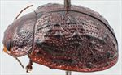
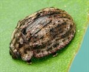
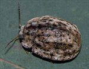
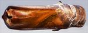
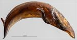
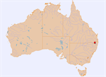

Click on images to enlarge


Male, Wilsons Downfall, N.E. New South Wales


Male, Carrolls Creek, N.E. New South Wales


Male, Wilsons Downfall, N.E. New South Wales


Aedeagus, dorsal view (Stanthorpe, S.E. Queensland)


Aedeagus, lateral view (Stanthorpe, S.E. Queensland)


Name
Trachymela sp. Ta156
Reference specimen
2017-343, Wilsons Downfall, NE New South Wales.
Adult Description
Length: ♂ 8.3–8.9 mm (n=11), ♀ 9.1–10.1 mm (n=18).
Colouration:
- Head: uniformly mid- to dark brown with black-tipped mandibles; labrum slightly paler, usually with a longitudinally oriented darker region in centre; antennomeres 1–3 light to mid-brown, 4–11 much darker, sometimes black, individual antennomeres may be darker towards apical end.
- Pronotum: brown, concolorous with head, with one or two round black maculae present on each side, the outer one, situated behind the eye in the foveal area, is often very small or even absent.
- Scutellum: dark brown, darker shade than adjacent area of pronotum.
- Elytra: brown, concolorous with pronotum, with raised black wart-like protuberances scattered over surface, some longitudinally extended and sometimes lining up in interrupted longitudinal series, punctures are similar or very fractionally darker than interstices, humeral callus black.
- Venter & Legs: uniformly very dark brown with legs concolorous, inner epipleural surface mostly brown, usually darker or even black towards inner margin.
- Cuticular Wax: moderate to thick layer of grey to brown, with large longitudinally oriented patches of the different shades present, which, with the prominent black verrucae present a colourful patchwork of shades.
Morphology:
- Shape: overall shape rather flattened, greatest height viewed laterally is at around or just in front of middle of elytral margin.
- Head: punctures moderately sized (pd ≈ 1.5–2× ef), slightly unevenly but quite densely distributed, a small flat unpunctured area sometimes present at rear middle. Antennae short (AL/BL: ♂ 40–42%, ♀ 32–34%), filiform, outer segments noticeably flattened.
- Pronotum: almost evenly curved transversely with lateral margins slightly explanate, foveal depression shallow with a clearly defined and almost round elevated area in middle, puncturation clearly impressed, similar to or finer than those on head and slightly unevenly distributed in discal area, becoming much coarser from foveal depression to lateral margins, interstices usually smooth in discal area, less often rough but never so as to obscure punctures. Front margins join lateral margins in a smoothly rounded right-angle, with lateral margin curving smoothly and gradually towards rear margin.
- Scutellum: smooth and unpunctured.
- Elytra: surface evenly curved transversely over discal region, sometimes noticeably explanate at margins, lightly curved longitudinally in anterior half, then slightly more strongly curved, a distinct shallow depression extends across surface just in front of middle, punctures large and distinct and relatively evenly distributed between the prominent verrucae and set deeply among the prominent raised interstices, the verrucae scattered over elytral surface, with some almost round, sometimes with a small puncture in centre, others extending longitudinally and tending to form interrupted longitudinal series, surface discontinuous under humeral callus; lateral margins noticeably sinuate. Vertical extension of epipleura moderate (HCE/PW = 0.32–0.34).
- Venter: prosternal process almost parallel-sided, lightly closed anteriorly, short setae sparsely distributed over prosternal process and mesoventrite, a single seta on anterior and median trochanter; front edge of metaventrite beveled, truncate; inner edge of posterior of epipleura lacking setae.
Male Genitalia (Aedeagus):
- Dimensions: moderately long and strongly curved (LPE = 31–34% BL).
- Dorsal view: shaft almost parallel-sided over whole of central section before sides converge towards apex initially very gradually and evenly, before the curvature increases after a slight discontinuity, dorsal surface lightly sclerotized with faint dorso-median channel present, short but well defined dorsolateral channels present adjacent to ostium; tip broad, protruding and truncate, ostium short, roughly oval, posterior shaped as a triangle with apex at centre.
- Lateral view: shaft almost evenly curved throughout basal and central section, thinning towards apex over 15% of length, tip deflexed, flagellum thick and spiraled where it exits ostium.
Immature Stages
Unknown.
Similar species
- Ta196: a species from the wet tropics of northern Queensland, known from a single female, that appears very similar to Ta156 and may turn out to be the same species. Its arrangement of verrucae is rather similar to Ta156, and in most morphological metrics it is essentially identical to that species. It differs by the inner surfaces of the epipleura being black, and the much darker colouration of the pronotum, where a single black transverse macula extends across the whole of the disc.
- Ta18: this species occurs over a similar geographic range and appears very similar at first glance. It may be distinguished by the form of the black markings on the disc of the pronotum: those in Ta18 are quite large and obliquely oval in shape, while those on Ta156 are considerably smaller and round. The species also differ in the arrangement and form of the elytral verrucae, these being much more extended longitudinally in Ta18.
- Ta234:
- Ta22: this species is also very similar but may be distinguished by the different form of the verrucae. In Ta22, these tend to be larger and are generally not much longer than wide; they also do not line up in longitudinal series.
Notes
- Taxonomy: One of the distinctive group of species that has a covering of cuticular wax of contrasting colours.
- Distribution & Abundance: Ta156 is distributed in the New England Tablelands of northern NSW and the adjacent areas of Queensland.
- Host Associations: Recorded almost exclusively from Eucalyptus andrewsii (Eucalyptus: Cineraceae, 21 records), with a single record from E. radiata (Eucalyptus: Aromatica).
Copyright © 2026. All rights reserved.